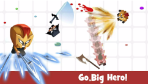
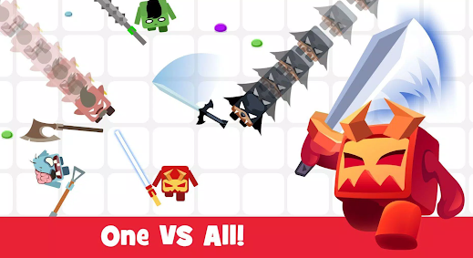
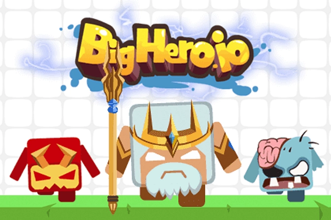

Introduction
BigHero.io is a fast-paced multiplayer superhero arena game where players battle to become the ultimate hero. What makes it unique is the blend of agar.io-style growth mechanics with intense, sword-wielding combat and superhero abilities. Instead of just eating dots, you swing a sword that grows longer with every enemy you eliminate. Players love it for its chaotic, high-stakes gameplay that tests reflexes, positioning, and strategic thinking. The thrill of dashing through the arena, collecting power-ups, and outsmarting opponents with a massive, extended sword reach creates an addictive experience. Whether you are dodging ambushes or executing perfect timed strikes, BigHero.io offers a thrilling superhero battleground that keeps you coming back for more.
Getting Started

Starting in BigHero.io is simple but requires quick adaptation. Upon entering the superhero arena, your immediate goal is to survive and grow your sword. You control your hero entirely with the mouse to navigate the map and aim your character. Click to attack, timing your sword swings carefully to strike down enemies. Press the 'D' key to activate your dash, a crucial instinctual movement for evading ambushes or chasing fleeing foes. When you defeat an enemy, collect the nutritional dots they leave behind to increase your size and sword length. A longer sword grants you superior range and a massive advantage over smaller heroes. However, remember that a larger size also makes you a bigger target. Focus on mastering your mouse precision and dash timing in your first few matches. Understand the arena layout, learn to time your attacks, and avoid getting greedy when surrounded by larger heroes.
Basic Tips
Here are essential tips to dominate the BigHero.io arena as a beginner. First, master your dash cooldown; use the 'D' key to escape when cornered by larger heroes, not just to chase kills. Second, utilize your sword's growing length to your advantage by keeping smaller foes at bay while you collect power-ups and dots. Third, avoid direct, head-on collisions with enemies who have longer swords; instead, circle them and strike from their blind spots using alternating approach patterns. Fourth, manage your greed—just because you have a long sword doesn't make you invulnerable. If a larger hero traps you against the arena edge, use your dash immediately to break their line of sight. Finally, always keep an eye on the leaderboard to track the biggest threats in the arena, allowing you to plan your movements and avoid unnecessary early-game confrontations while building your size safely.
Advanced Strategies

For experienced players, mastering advanced strategies is key to topping the BigHero.io leaderboard. First, employ the 'bait and dash' tactic: pretend to collect a cluster of power-ups to lure a larger hero into a trap, then use your dash to instantly reverse direction and strike them while their attack animation is locked. Second, utilize environmental awareness by fighting near the arena's edges where opponents have less room to maneuver, effectively trapping them against the boundary. Third, implement aggressive circling; instead of attacking straight on, maintain a circular formation around your target to catch them outside their optimal vision angle, striking when their sword is on the opposite side. Lastly, manage your sword length dynamically. Sometimes it is beneficial to intentionally let a smaller hero hit you to reduce your size, making you a harder target to hit while you reposition for a devastating counter-attack with your extended range.
Pro Tips

True BigHero.io pros separate themselves through micro-mechanics. First, micro-dash: tap the 'D' key in short, rapid bursts during close-quarters combat to unpredictably alter your trajectory, making your hitbox nearly impossible to track. Second, predict the swing: watch the enemy's mouse cursor rather than their character model to anticipate their sword swing direction, allowing you to slip into their blind spot. Third, farm the edges: early game, stick to the perimeter of the map to safely collect dots and power-ups without getting caught in the chaotic center brawls. Finally, use your extended sword to sweep multiple targets simultaneously by positioning yourself at the exact center of a clustered group of smaller heroes.
Conclusion
BigHero.io offers an exhilarating blend of fast-paced sword combat and superhero arena survival. By mastering your dash, timing your strikes, and outsmarting your opponents, you can grow your sword and claim the top spot on the leaderboard. Jump into the battlefield, refine your reflexes, and prove you are the ultimate hero.